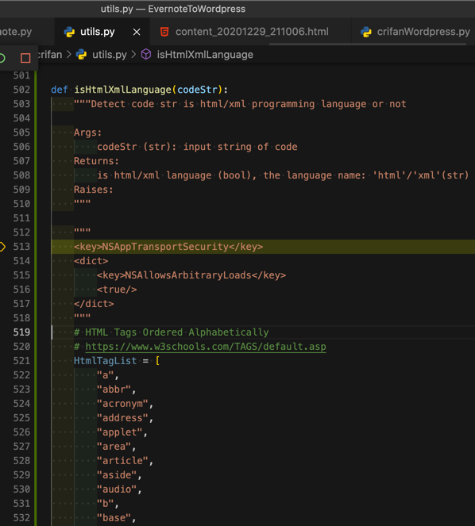

过滤出html的tab标签列表
保留tag标签
正则：
<(\w+)>\s.+$(\n[^<]+)?
"$1",\n
从：
<a> Defines a hyperlink
<abbr> Defines an abbreviation or an acronym
<acronym> Not supported in HTML5. Use <abbr> instead.
Defines an acronym
<address> Defines contact information for the author/owner of a document
<applet> Not supported in HTML5. Use <embed> or <object> instead.
Defines an embedded applet
<area> Defines an area inside an image map
<article> Defines an article
<aside> Defines content aside from the page content
<audio> Defines embedded sound content
<b> Defines bold text
<base> Specifies the base URL/target for all relative URLs in a document
<basefont> Not supported in HTML5. Use CSS instead.
Specifies a default color, size, and font for all text in a document
<bdi> Isolates a part of text that might be formatted in a different direction from other text outside it
<bdo> Overrides the current text direction
<big> Not supported in HTML5. Use CSS instead.
Defines big text
<blockquote> Defines a section that is quoted from another source
<body> Defines the document's body
Defines a single line break
<button> Defines a clickable button
<canvas> Used to draw graphics, on the fly, via scripting (usually JavaScript)
<caption> Defines a table caption
<center> Not supported in HTML5. Use CSS instead.
Defines centered text
<cite> Defines the title of a work
<code> Defines a piece of computer code
<col> Specifies column properties for each column within a <colgroup> element
<colgroup> Specifies a group of one or more columns in a table for formatting
<data> Adds a machine-readable translation of a given content
<datalist> Specifies a list of pre-defined options for input controls
<dd> Defines a description/value of a term in a description list
<del> Defines text that has been deleted from a document
<details> Defines additional details that the user can view or hide
<dfn> Specifies a term that is going to be defined within the content
<dialog> Defines a dialog box or window
<dir> Not supported in HTML5. Use <ul> instead.
Defines a directory list
<div> Defines a section in a document
<dl> Defines a description list
<dt> Defines a term/name in a description list
<em> Defines emphasized text
<embed> Defines a container for an external application
<fieldset> Groups related elements in a form
<figcaption> Defines a caption for a <figure> element
<figure> Specifies self-contained content
<font> Not supported in HTML5. Use CSS instead.
Defines font, color, and size for text
<footer> Defines a footer for a document or section
<form> Defines an HTML form for user input
<frame> Not supported in HTML5.
Defines a window (a frame) in a frameset
<frameset> Not supported in HTML5.
Defines a set of frames
<h1> to <h6> Defines HTML headings
<head> Contains metadata/information for the document
<header> Defines a header for a document or section
<hr> Defines a thematic change in the content
<html> Defines the root of an HTML document
<i> Defines a part of text in an alternate voice or mood
<iframe> Defines an inline frame
<img> Defines an image
<input> Defines an input control
<ins> Defines a text that has been inserted into a document
<kbd> Defines keyboard input
<label> Defines a label for an <input> element
<legend> Defines a caption for a <fieldset> element
<li> Defines a list item
<link> Defines the relationship between a document and an external resource (most used to link to style sheets)
<main> Specifies the main content of a document
<map> Defines an image map
<mark> Defines marked/highlighted text
<meta> Defines metadata about an HTML document
<meter> Defines a scalar measurement within a known range (a gauge)
<nav> Defines navigation links
<noframes> Not supported in HTML5.
Defines an alternate content for users that do not support frames
<noscript> Defines an alternate content for users that do not support client-side scripts
<object> Defines a container for an external application
<ol> Defines an ordered list
<optgroup> Defines a group of related options in a drop-down list
<option> Defines an option in a drop-down list
<output> Defines the result of a calculation
<p> Defines a paragraph
<param> Defines a parameter for an object
<picture> Defines a container for multiple image resources
<pre> Defines preformatted text
<progress> Represents the progress of a task
<q> Defines a short quotation
<rp> Defines what to show in browsers that do not support ruby annotations
<rt> Defines an explanation/pronunciation of characters (for East Asian typography)
<ruby> Defines a ruby annotation (for East Asian typography)
<s> Defines text that is no longer correct
<samp> Defines sample output from a computer program
<script> Defines a client-side script
<section> Defines a section in a document
<select> Defines a drop-down list
<small> Defines smaller text
<source> Defines multiple media resources for media elements (<video> and <audio>)
<span> Defines a section in a document
<strike> Not supported in HTML5. Use <del> or <s> instead.
Defines strikethrough text
<strong> Defines important text
<style> Defines style information for a document
<sub> Defines subscripted text
<summary> Defines a visible heading for a <details> element
<sup> Defines superscripted text
<svg> Defines a container for SVG graphics
<table> Defines a table
<tbody> Groups the body content in a table
<td> Defines a cell in a table
<template> Defines a container for content that should be hidden when the page loads
<textarea> Defines a multiline input control (text area)
<tfoot> Groups the footer content in a table
<th> Defines a header cell in a table
<thead> Groups the header content in a table
<time> Defines a specific time (or datetime)
<title> Defines a title for the document
<tr> Defines a row in a table
<track> Defines text tracks for media elements (<video> and <audio>)
<tt> Not supported in HTML5. Use CSS instead.
Defines teletype text
<u> Defines some text that is unarticulated and styled differently from normal text
<ul> Defines an unordered list
<var> Defines a variable
<video> Defines embedded video content
<wbr> Defines a possible line-break
变成：
"a",
"abbr",
"acronym",
"address",
"applet",
"area",
"article",
"aside",
"audio",
"b",
"base",
"basefont",
"bdi",
"bdo",
"big",
"blockquote",
"body",
"br",
"button",
"canvas",
"caption",
"center",
"cite",
"code",
"col",
"colgroup",
"data",
"datalist",
"dd",
"del",
"details",
"dfn",
"dialog",
"dir",
"div",
"dl",
"dt",
"em",
"embed",
"fieldset",
"figcaption",
"figure",
"font",
"footer",
"form",
"frame",
"frameset",
"h1",
"head",
"header",
"hr",
"html",
"i",
"iframe",
"img",
"input",
"ins",
"kbd",
"label",
"legend",
"li",
"link",
"main",
"map",
"mark",
"meta",
"meter",
"nav",
"noframes",
"noscript",
"object",
"ol",
"optgroup",
"option",
"output",
"p",
"param",
"picture",
"pre",
"progress",
"q",
"rp",
"rt",
"ruby",
"s",
"samp",
"script",
"section",
"select",
"small",
"source",
"span",
"strike",
"strong",
"style",
"sub",
"summary",
"sup",
"svg",
"table",
"tbody",
"td",
"template",
"textarea",
"tfoot",
"th",
"thead",
"time",
"title",
"tr",
"track",
"tt",
"u",
"ul",
"var",
"video",
"wbr",
去除多余空行
再用正则：
\n\n+
\n
变成：
"a",
"abbr",
"acronym",
"address",
"applet",
"area",
"article",
"aside",
"audio",
"b",
"base",
"basefont",
"bdi",
"bdo",
"big",
"blockquote",
"body",
"br",
"button",
"canvas",
"caption",
"center",
"cite",
"code",
"col",
"colgroup",
"data",
"datalist",
"dd",
"del",
"details",
"dfn",
"dialog",
"dir",
"div",
"dl",
"dt",
"em",
"embed",
"fieldset",
"figcaption",
"figure",
"font",
"footer",
"form",
"frame",
"frameset",
"h1",
"head",
"header",
"hr",
"html",
"i",
"iframe",
"img",
"input",
"ins",
"kbd",
"label",
"legend",
"li",
"link",
"main",
"map",
"mark",
"meta",
"meter",
"nav",
"noframes",
"noscript",
"object",
"ol",
"optgroup",
"option",
"output",
"p",
"param",
"picture",
"pre",
"progress",
"q",
"rp",
"rt",
"ruby",
"s",
"samp",
"script",
"section",
"select",
"small",
"source",
"span",
"strike",
"strong",
"style",
"sub",
"summary",
"sup",
"svg",
"table",
"tbody",
"td",
"template",
"textarea",
"tfoot",
"th",
"thead",
"time",
"title",
"tr",
"track",
"tt",
"u",
"ul",
"var",
"video",
"wbr",
-》用于：
【未解决】用Python实现从代码字符串中检测出是何种编程语言
中，检测字符串是否是html语言，其中判断tag是否是html的tag
